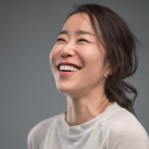
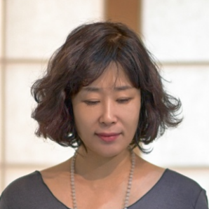
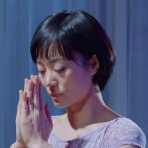

2002년부터 요가 매트위에서 시작된, 스스로의 몸의 인지와 깨어남이 마음으로 확장되어,
긍정적이고 밝은에너지로 변화되는 과정이 요가를 사랑하는 계기가 되었습니다. 비크람요가,
아쉬탕가요가, 빈야사요가 등을 수련하며,요가티칭과 수련에 정체성을 찾고자했습니다.

현대사회는 무엇이든 많은 양에 지나치게 치우쳐 있습니다.
너무 많은 것들은 가끔 우리에게 불균형을 가져다 주기도 합니다.
이런 양적으로 치우친 삶엔 균형이 필요하고, 인요가는 삶의 균형을 되찾는데 도움이 될 것입니다.
요가강사 소울입니다. 자신이 지금 하고 있는 일을 충분히 배우면서 즐기세요.
그러다보면, 마음이 정말 행복해지는 것을 알게 됩니다. 요가를 사랑하고,
현재 요가를 입문하는 모든 이들이 행복했으면 하는 마음으로 이 글을 마치며 나마스떼.

빈야사는 '호흡과 동작의 일치' 다양한 자세로 연속되는 움직임은 마치 물이 흘러가듯
몸과 마음을 하나 되게 하여 집중할 수 있는 수련뿐만 아니라 체력을 증진 할 수 있는 프로그램 인데요.
굳어 있는 몸을 풀고 호흡을 통해 몸에 생기를 불어 넣어 스트레스를 푸는 시간을 가져보도록 합니다
안녕하세요. 12년차 요가강사 조이입니다. 저는 인사이드플로우 주니어 티처로 활동중이고
현재 개인레슨전문 요가스튜디오를 운영 중입니다.
제가 추구하는 요가는 누구나 쉽게 접할 수 있고 다양한 재미와 자극을 느낄 수 있는 방향을 추구합니다.
안녕하세요 요가강사 예원입니다. 우리는 일상생활을 하며 많은 피로와 스트레스를 느끼게 되는데요.
요가를 통해 몸과 마음이 편안해지고, 더 나아가 나에게 쌓인 피로를 줄여주는 릴렉스 요가 함께 해보도록 하겠습니다.